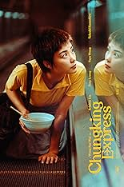

Season 57 (2025-2026)
-
September 14, 2025Directed by Mel Brooks; Starring Gene Wilder, Peter Boyle, Marty Feldman, Madeline Kahn, Teri Garr
Young Frankenstein
USA, 1974, 106 min, B&W, PG
Let's get on thing straight. It's FRAHNKEN-SCHTEEN! Our beloved national treasure, Mel Brooks, pulls a stellar cast of his classic actors into a constellation of rollicking hilarity. American medical school's lecturing physician, Frederick Frankenstein (Wilder), inherits the family castle from his grandfather Victor Frankenstein – the infamous mad scientist. Upon discovering the secret entrance to Victor's laboratory and reading his private journals, Frederick resumes his grandfather's experiments of bringing the dead back to life. Honestly, why wouldn't he? He has castle and a creepy sidekick (Feldman). The belly laughs are inevitable.
Film Notes (Karen Bender): Tonight's film is Mel Brooks' Young Frankenstein – a brilliantly funny, affectionate send-up of classic horror that's become a comedy classic in its own right. Released in 1974, the film parodies the 1930s Universal horror films, especially Frankenstein (1931) and Bride of Frankenstein (1935), not just in story, but in look, sound, and spirit.
It was shot entirely in beautiful black and white, with the sets dressed with some of the original lab equipment from the 1931 Frankenstein, which adds to its authenticity and homage. What makes Young Frankenstein stand out is that it's not just a spoof – it's a loving recreation of the genre. The sets, the music, the lighting, and even the pacing feel like a true classic horror film… and then the jokes land. Mel Brooks restrains his usual chaos just enough to keep the film grounded in its tribute, which makes the absurdity hit even harder.
Watch for running gags, expert use of silence and timing that prolong the laughs, and comedic use of horror tropes. -
October 19, 2025Directed by Jordan Peele; Starring Daniel Kaluuya, Allison Williams, Bradley Whitford, Catherine Keener
Get Out
USA, 2017, 104 min, Color, R
Talented young photographer Chris Washington (Daniel Kaluuya) agrees to meet the family of his white girlfriend Rose Armitage (Allison Williams), with some reluctance because Rose has not shared with her family that Chris is black. As the weekend progresses, a series of increasingly disturbing discoveries lead him to a truth that he never could have imagined. When motives start to appear more sinister, Chris decides it is time to get out. Get Out is essentially about that unsettling feeling when you know you don't belong somewhere; when you know you're not wanted or perhaps wanted only to be utilized as an object. Peele uses the age-old horror genre hallmark of knowing something is wrong behind the closed doors. He uses the "Don't go into the basement" theme imbued with a racial, satirical edge.
Film Notes (Emma Lampe): Photographer Chris Washington visits the family estate of his white girlfriend Rose Armitage for the weekend. Initially welcomed warmly, Chris begins to notice unsettling behavior from the family's Black servants and the guests at a party. He soon uncovers a horrifying truth: the Armitages are part of a cult that transplants the consciousness of wealthy white people into Black bodies — a process called the Coagula. Chris must fight to escape before becoming their next victim.
Get Out offers the best of the horror genre. When wielded properly, horror is a highly effective way of holding a mirror to society. The worst problems our society faces should horrify us, though we are all too often numb to them.
Prior to writing and directing Get Out, Jordan Peele was squarely known as a sharp and adept comedy writer and performer. In his directorial debut, it is clear that his keen understanding of people is relevant in comedy writing, the horror genre, and filmmaking in general.
Peele made Get Out in the wake of the Black Lives Matter movement, prompted by a series of killings committed by police officers against Black men. That influence is clear here and makes for an insightful and impactful film (that just so happens to be a horror movie). -
 November 9, 2025Directed by Jirí Menzel; Starring Václav Neckár, Josef Somr, Vlastimil Brodský
November 9, 2025Directed by Jirí Menzel; Starring Václav Neckár, Josef Somr, Vlastimil Brodský
Closely Watched Trains (Ostre sledované vlaky)
Czechoslovakia, 1966, 92 min, B&W, Not Rated, Czech/German w/subtitles
Young Miloš Hrma (Václav Neckár) works at a train station in German-occupied Czechoslovakia. Though Miloš is a mere apprentice dispatcher earnestly trying to lose his virginity, he soon finds a path to glory as he is recruited into a plot to bomb a munitions train. Love, angst, and innuendo amid the back drop of Nazi propaganda. This isn't, however, a purely a political war film. It is a surprisingly upbeat, sensual story of a young man interrupted. The film won the Academy Award winner for Best Foreign Language Film in 1968.
Film Notes (Patricia Webb): In the spring, a young man's fancy lightly turns to thoughts of love, sex – and those damn Nazis. The hero of this wry coming-of-age tale is the peculiarly innocent Miloš Hrma (Václav Neckár), whose gentle bewilderment and sardonic self-reflection mark him as both a product and a parody of his times. He is not so much a man of action as a man adrift – curious, uncertain, and awkwardly searching for what it means to come of age amid occupation and absurdity.
Set in the waning days of World War II in German-occupied Czechoslovakia, director Jirí Menzel delivers one of the defining works of the Czechoslovak New Wave. Beneath the understated humor and pastoral setting, Closely Watched Trains reveals a quiet yet piercing meditation on love, desire, war, and the peculiar dignity of ordinary lives disrupted by history.
Among the memorable performances is Jitka Zelenohorská as the mischievous telegraphist Zdenicka, whose gleefully improper testimony at a farcical inquisition steals the scene. Equally memorable is Vlastimil Brodský's Councillor Zednícek, a pompous local Nazi sympathizer so consumed with minor scandals that he remains blind to the subversive acts of resistance happening right before his eyes.
Menzel's genius lies in his restraint – his ability to allow setting, character, and irony to carry the story with gentle absurdism. His satire falls not on the distant German occupiers but on the homegrown collaborators who embody bureaucratic foolishness and moral blindness. The result is a film at once comic, tragic, erotic, and humane – a meditation on youth and impotence, courage and absurdity, and the small gestures of defiance that ripple through history.
(Apologies to Alfred, Lord Tennyson and Shakespeare) -
 December 14, 2025Directed by Wes Anderson; Starring Ralph Fiennes, F. Murray Abraham, Tony Revolori, Adrien Brody
December 14, 2025Directed by Wes Anderson; Starring Ralph Fiennes, F. Murray Abraham, Tony Revolori, Adrien Brody
The Grand Budapest Hotel
USA/Germany, 2014, 99 min, Color/B&W, R
Take my hand and sleepwalk with me into the intricately immersive texture of Wes Anderson; the trademark stylization, the colors, the meticulously composed shots, the precise camera movements, the Matryoshka doll layering of the crucial-to-the-plot opening. In a place lost to time, a once grand hotel stands nobly perched upon a rock mountain. Its lively days of glory are long past, yet it remains. History of the aging auberge comes alive as it's told by the owner to a visiting writer. It's a fascinating, compelling, dynamic tale of an extraordinary concierge and his faithful lobby boy.
-
January 11, 2026Directed by Elia Kazan; Starring Andy Griffith, Patricia Neal, Anthony Franciosa, Walter Matthau
A Face in the Crowd
USA, 1957, 126 min, B&W, Not Rated
Larry Rhodes (Andy Griffith), a currently incarcerated and hard drinking drifter, lucks upon a modest dose of fame. With his "aww shucks" Will Rogers Jr. image, he soon rises to great fame and influence on national television. His buoyant folk-singing charisma takes a turn towards egomania as his popularity rises and his public persona goes unchecked. As his fortunes allow, he becomes a womanizing bigamist and proves to be a rather despicable person. He won't quit, even as he makes himself a target for destruction by his once promoter and love interest Marcia Jefferies (Patricia Neal). Oh, to have again the halcyon days of old, when an indiscreet moment on a hot mic could take a man down.
-

February 1, 2026Directed by Wong Kar-Wai; Starring Brigitte Lin, Takeshi Kaneshiro, Tony Leung, Faye Wong
Chungking Express (Chung Hing sam lam)
Hong Kong, 1994, 102 min, Color, PG-13, Cantonese/Mandarin w/subtitles
Late shift on the seedy side of Hong Kong, cops ramble around looking for food and a respite from heartbreak. In two sequential tales, two police officers, He Zhi Wu (Takeshi Kaneshiro) and Cop 663 (Tony Leung) are both mourning the loss of love. Their paths seem to have no obvious connections, but secrets don't always reveal themselves at first glance. Both stories speak of disconnections and loneliness in a vast and crowded city. Love unfolds rather awkwardly, visualized in rhythmic switches between film, video, and pixelated images that call to mind the style of a 90s music video. We must follow the plot to wherever it wants to take us.
-
March 8, 2026Directed by Robert Rodriguez; Starring Carlos Gallardo, Consuelo Gómez, Jaime de Hoyos
El Mariachi
Mexico/USA, 1992, 91 min, Color, R, Spanish w/subtitles and English
A young vagabond musician, El Mariachi (Carlos Gallardo), comes to town wearing black, with a guitar case and a plan. He has dreams of becoming a mariachi like his father. On the same day, his life intersects with Azul (Reinol Martinez), who has also come to town with a guitar case and a plan - to exact revenge upon the drug lord responsible for his incarceration. What follows is an entertaining story of coincidences, mistaken identities, gun fights, and romance. A film that feels so much bigger than its $7000 budget, El Mariachi was selected by the Library of Congress for preservation in the United States National Film Registry for being culturally significant.
-
April 12, 2026Directed by James Ivory; Starring Maggie Smith, Helena Bonham Carter, Denholm Elliott, Julian Sands
A Room with a View
UK/USA, 1985, 117 min, Color, Not Rated
A captivating romantic drama that explores love through palpable dichotomy – passion versus stability, dutiful conformity versus rebellious abandon. A young woman finds love and personal authenticity amid the enchanting landscapes of early 20th-century Italy and England. The story follows Lucy Honeychurch (Helena Bonham-Carter) as a very British holiday in Italy becomes her reluctant path to self-discovery. Lucy contends with societal expectations and her own desires after a chance encounter with George Emerson (Julian Sands) in picturesque Florence. She finds herself torn between the charming but unconventional George and her respectable yet dull soon-to-be fiancé Cecil Vyse (Daniel Day-Lewis). As she navigates the complexities of love, class, and personal freedom, Lucy must ultimately choose between the life prescribed for her and the passionate existence she yearns for. Stunning cinematography, wonderful characters.
-
May 10, 2026Directed by Kirk Jones; Starring Ian Bannen, David Kelly, Fionnula Flanagan
Waking Ned Devine
UK/Ireland, 1998, 91 min, Color, PG
In the isolated micro-sized Irish hamlet of Tully More, eccentric locals live by their own set of rules. A pair of elderly busy bodies covertly seek to ferret out the winner of the National Lottery. Let's join them for tea, shall we? Irish shenanigans are afoot as local codgers Jackie O'Shea (Bannen) and Michael O'Sullivan (Kelly) find the winning ticket in the hand of a recently dead Ned Devine. A dead Ned just won't do. Jones invites us to celebrate the nature of humanity; our sordid nonsense, our absurdity in the throes of greed, and our earnestness in love and labor. Quaint old charm meets nonsensical curmudgeons.
-
June 14, 2026Directed by Phil Morrison; Starring Embeth Davidtz, Alessandro Nivola, Amy Adams, Celia Weston, David Kuhn
Junebug
USA, 2005, 106 min, Color, R
In the sophisticated art circles of Chicago and in rural North Carolina, tone is everything. It's not so much what you said, but how you said it - or didn't say it. Chicago art dealer Madeleine (Davidtz) and new husband George (Nivola) travel to North Carolina's rural piedmont to meet George's family. Intelligent George, stifled by guilt, ignites an explosion with his angry, sullen brother Johnny (McKenzie). Junebug serves up two slices of life, each with heaping sides of derision and compassion. Avoiding the obvious tropes; the intelligent city slicker and the slow-witted country hick, Phil Morrison sets his characters to their individual melody. While they hit their notes of good intentions, they can't seem to harmonize together as a family. Not in times of joy, surely not in times of sorrow.
-
July 12, 2026Directed by Akiva Schaffer, Jorma Taccone; Starring Andy Samberg, Jorma Taccone, Akiva Schaffer, Sarah Silverman, Tim Meadows
Popstar: Never Stop Never Stopping
USA, 2016, 87 min, Color, R
Maybe we didn't know we needed a Spinal Tap for the Avril Lavigne generation, but here we are. Laugh until your face hurts. This is the behind-the-music rise, falling, and quasi-redemption of a boy band stand-out turned pop star turned rap mega-star. As his career hit the skids, Conner4Real (Samberg) ruthlessly seeks to recapture his stardom by releasing a solo album. Conner inhabits a narcissistic arrogance as he is urged by manager Paula (Silverman) to remember where he came from and make amends with his childhood friends Owen (Jorma Taccone) and Lawrence (Akiva Schaffer) so they can reform The Nasty Boyz. Popstar spares nothing in its quest to lampoon every last bit of artificiality in contemporary pop music - but in a nice way.
-
August 8, 2026Directed by Federico Fellini; Starring Marcello Mastroianni, Anita Ekberg, Anouk Aimée, Yvonne Furneaux
La Dolce Vita
Italy/France, 1960, 174 min, B&W, Not Rated, Italian w/subtitles
Nominated for four Academy Awards, BAFTA, and winner of Best Foreign Language Film at New York Film Critics Circle. Marcello Rubini (Marcello Mastroianni) is a tabloid gossip columnist. Upon the seven hills of Rome, through the nightclubs and sidewalk cafes, we chase Rubini along parade of elegant decadence. Rubini slinks around the "sweet life" of Rome in a fruitless search for love and happiness. An extravagant series of seven nights and dawns, descents and ascents, there are so many great moments. Yet, it is also a cautionary tale of a man, uncentered and looking for meaning in his life, and a social scene, glamorous and rife with promiscuity, while both are hurtling themselves towards decay of the soul.
Read Roger Ebert's review of La Dolce Vita at Great Movies.